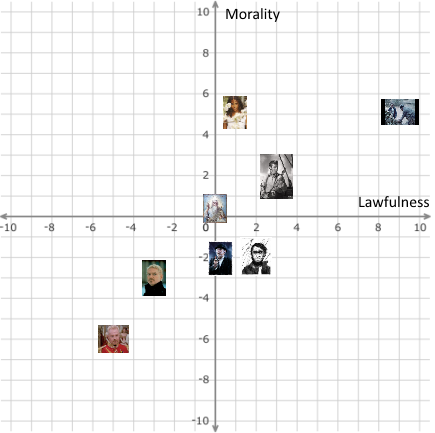

A trolley is heading down the tracks towards five workers who will be killed if the trolley continues on its course. You have the following options, which do you choose?
Pull a lever to change the path of the trolley, killing three other people on the other track.
Don't pull the lever, hoping it absolves you from anyone thinking you're a murderer.
Push a man off the bridge over the tracks onto the tracks, knowing that his body will stop the trolley.
Try to convince the man next to you to jump off himself in the thirty or so seconds you have left.
Walk away; if the situation doesn't involve you, how can anyone attribute guilt towards you?
When you are 10 years old, your house is robbed of almost everything in it, including personal items that are invaluable to you. You don't know who the thief is. What do you do?
Try to rebuild your life, not allowing this great loss to slow your growth in life.
Become a vigilante who attempts to stop all crime and violence, even if it means murdering criminals.
Devote your life to finding and seeking vengeance on the thief.
Accept that the loss hurt you and don't do anything about it.
Try to find the thief and make amends with them, hoping that they accept your forgiveness and change for the better.
You are on a small raft, hoping to float to safety after a long engagement with Moby Dick. There are three people on the raft with you, and all of you realize that the raft has too much weight and someone needs to be thrown off. One of the people with you is injured, and will likely die from their wounds if you don't reach land soon anyway. What do you do?
Call for a vote for who should be thrown off, planning to vote for the injured crew member.
Try to logically convince the crew that throwing the injured crew member off makes the most sense.
Throw yourself off the raft. Life isn't worth living anyway.
Ask the injured crew member why they're having so much trouble deciding to sacrifice themselves.
Hope that the raft will land safely anyway and do nothing.
You've been hearing what you think are screams coming from your neighbor's house every night. How do you proceed?
Go to his house in the middle of the night.
Don't worry about it; it's not your problem.
Scream back.
Send a letter to your neighbor asking him to meet you at the property boundary and discuss it.
Investigate during the daytime
You are married. You walk into a bar and order a couple of drinks. You look around and see a person who you seem to have an instant conection to, however you are married. What do you do?
Propose to them.
Murder them. They are a threat to your relationship.
Start flirting with them.
Realize they are your sibling-in-law and marry them anyway.
Sit there and pretend that one day you will have social skills.
